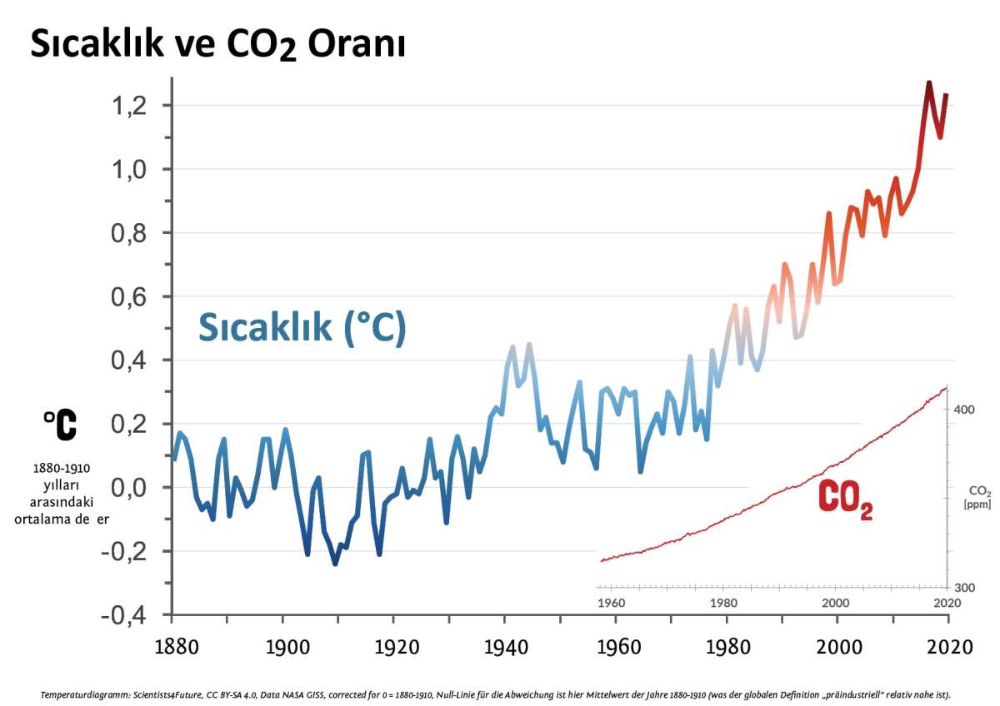

iklim değişikliği artık büyük bir sorun oldu.
insanlarda bunun hakkında yeterince önlem almıyor
Peki bunun hakkında önlem almazsak ne kadar
Fosil yakıt kullanımını azaltmak
Toplu taşıma ve bisiklet kullanmak
Geri dönüşüm yapmak ve atık azaltmak
Enerji tasarrufu sağlamak
